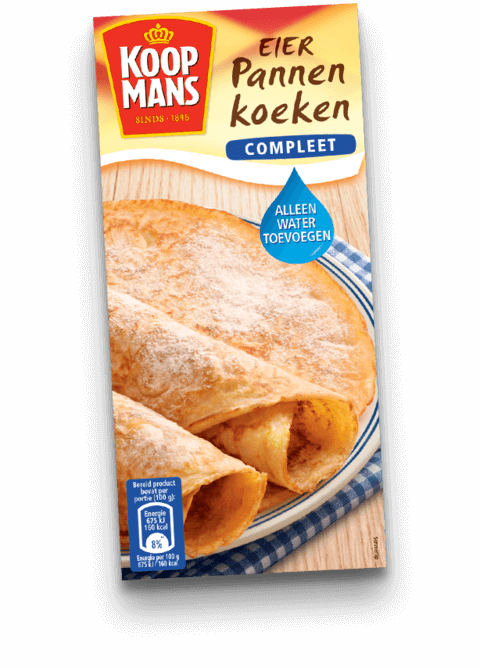

Natuurlijk kan je naar een pannenkoekenhuis gaan, maar het leukste blijft om ze zelf te maken. Wij gaan hier de beste recepten neerzetten en de beste pannenkoekmixes.
Als je totaal geen moeite wil doen:

Een woord: Eierpannenkoekenmix. Beetje lang woord, maar daar gaat het niet om.
Het punt is dat je alleen water hoeft toe te voegen aan deze mix, daarbij de
makkelijkste mix voor de meest luie personen onder ons. (Ik kijk naar u, meneer
Moorlag.)
Als je een klein beetje moeite wil doen:
Koop dan gewoon de normale pannenkoekenmix waar je eieren en melk moet toevoegen.
Gewoon lekker. Dat is de slogan van deze mix.
Als je heel veel moeite wil doen:
Wie wil er een supermakkelijke mix van, maar 80 cent als je ook moeilijk kan
doen en alles zelf maakt! YEY! MOEITE! Hier heb je een fancy recepie van
Brendakookt.nl. Met appel woe.
Bereidingstijd 30 minuten
Ingrediënten voor 2-3 personen:
Extra benodigd: toppings om de pannenkoeken mee te beleggen. Bijvoorbeeld kaas, spek of stroop, poedersuiker.. noem maar op!
Bereiding:
Schil de appel en rasp deze fijn.
Zeef de bloem en mix dit samen met het zout en de kaneel met de helft van de melk. Voeg een voor een de eieren toe (mix het ondertussen door) en voeg tot slot beetje bij beetje de rest van de melk en een scheutje olijfolie toe. Roer de geraspte appel door het beslag.
Verwarm een beetje boter in een koekenpan, zorg er voor dat de pan goed heet is voor je de pannenkoeken gaat bakken.
Verdeel (bijvoorbeeld met een soeplepel) beslag in de pan en bak de pannenkoek om en om mooi bruin. Herhaal dit tot het beslag op is.
Als je extra wil zijn:
Dus jij bent extra he? Nou wij niet, maar we zijn wel zo aardig geweest om een
website te vinden
met allemaal fancy extra pannenkoeken die je kan maken. Met banaan en aardbeien
en chocola enzo. (poedersuiker for the win)
Als je een glutenallergie hebt:
Welp, that sucks. Gelukkig bestaat er ook pannenkoekenmixen die glutenvrij zijn!
YEY! Maatschappij denkt aan jullie, soort van. Het is namelijk wel duurder, wel
1,60! Daar kan je 2 normale pakken van kopen! Poor you.